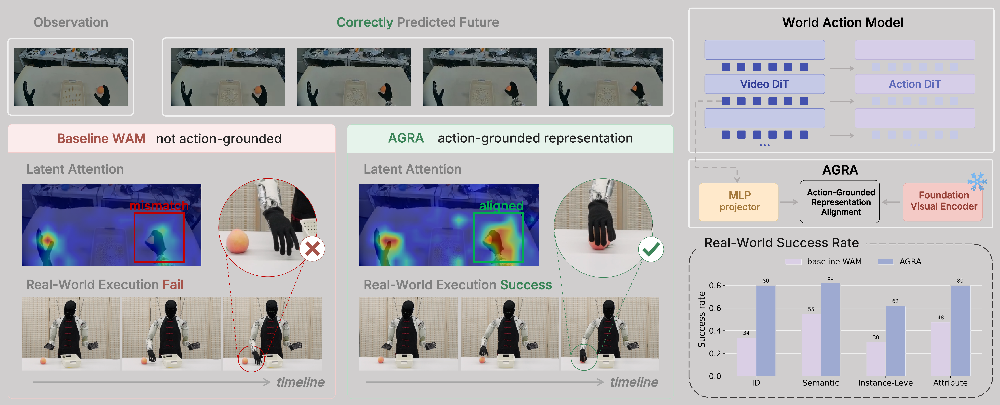
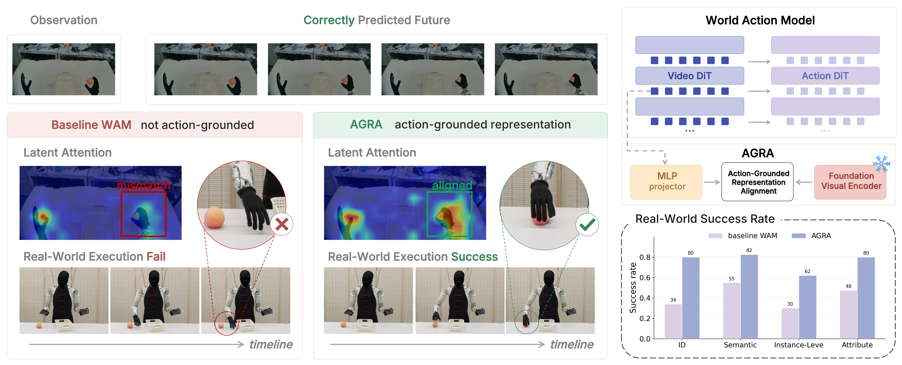
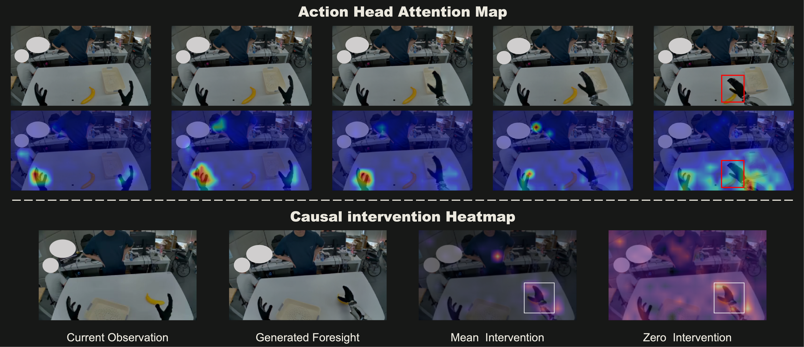
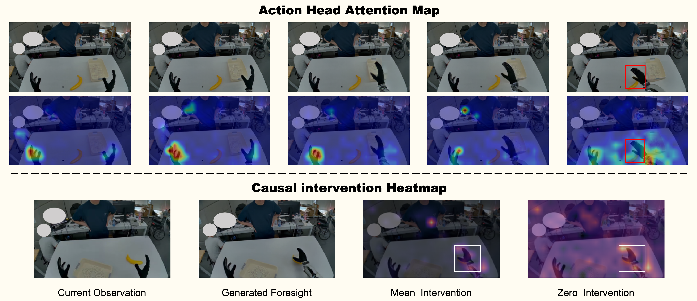
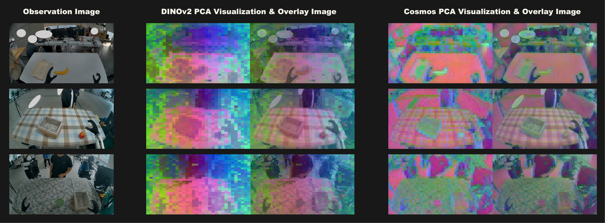
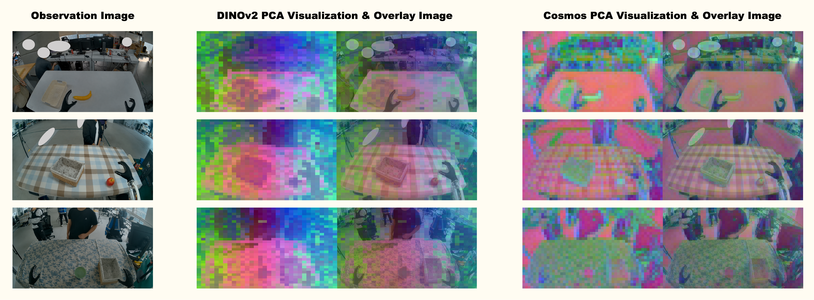
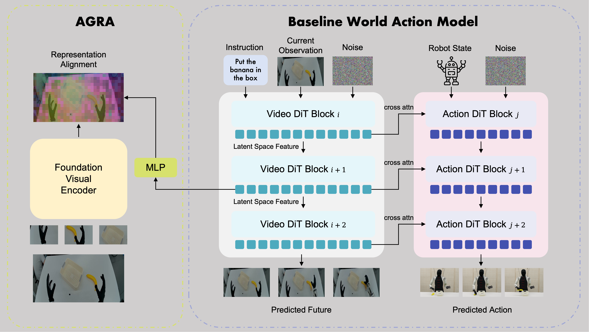
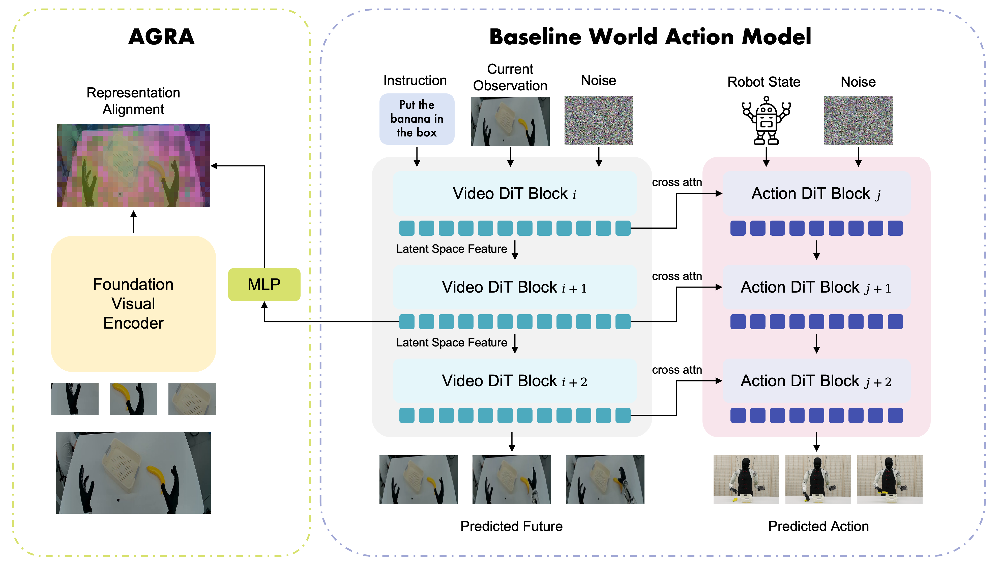
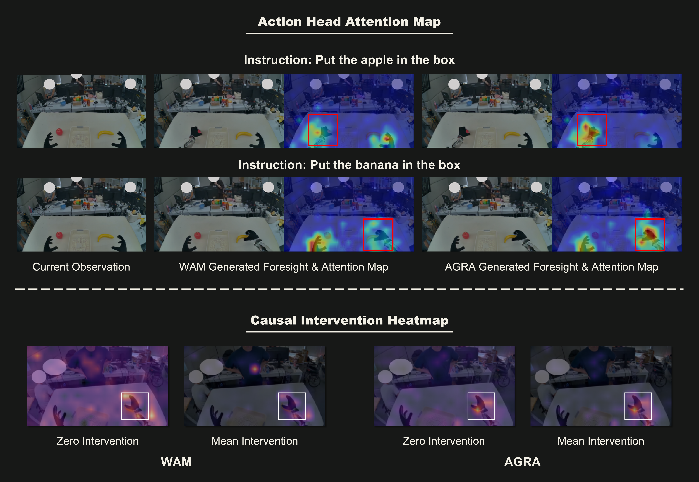
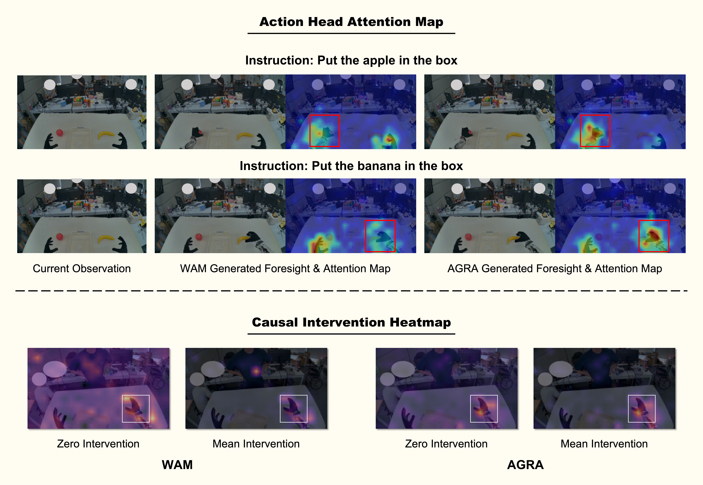

Baseline WAM
Put the ball in the box.
AGRA
Put the ball in the box.
World Action Models
Making Foresight Actionable: Action-Grounded Representation Alignment
in World Action Models
Overview
Make world model representations more suitable for downstream policies


World Action Models (WAMs) offer a promising route for robot manipulation by using video generation models to model future scene evolution before producing control actions. However, our empirical observations reveal a phenomenon: generating plausible visual futures does not always guarantee the extraction of accurate actions.
To diagnose this failure, we conduct action-head attention analysis and causal interventions. We find that the action decoder fails to focus on task-relevant interaction regions and remains sensitive to perturbations in task-irrelevant areas. This reveals a representation mismatch: hidden states optimized for visual reconstruction are not inherently organized in a form useful for low-level action control.
In this paper, we propose AGRA, an Action-Grounded Representation Alignment objective that regularizes the world-action interface by aligning intermediate video diffusion features with spatially coherent semantic representations from a foundation visual encoder. We evaluate AGRA on real-world manipulation tasks. Experiments show that AGRA makes world model representations more action-grounded: by focusing the action decoder on the correct interaction regions, it improves object localization accuracy and affordance understanding, and makes the policy more robust to perturbations in task-irrelevant regions. As a result, AGRA consistently improves both in-distribution performance and out-of-distribution generalization over baseline world action model.
Motivations
Generating plausible visual futures does not always guarantee the extraction of accurate control actions
Cross-attention maps show the action head ignoring the critical hand-object interaction region, despite generating a plausible future video.
Causal intervention heatmaps reveal that the baseline model’s decisions are heavily influenced by task-irrelevant background elements rather than the interaction area.
DINOv2 organizes semantically and functionally similar regions into spatially coherent structures; Cosmos features remain more entangled with local appearance.
Our empirical observations show that plausible visual foresight does not necessarily translate into reliable action prediction. A WAM can generate a plausible and task-consistent future while the action decoder still produces an incorrect motion.
Diagnosing action-grounding gap. To understand this failure mode, we diagnose the world-action interface from both attentional and causal perspectives. We find that the action decoder in the baseline WAM often fails to concentrate on task-relevant interaction regions, such as the hand-object contact areas. In addition, causal interventions on world model hidden states show that action outputs can be sensitive to perturbations in task-irrelevant background regions.
Feature Visualization. This evidence reveals an action-grounding gap between video prediction and action decoding. Video diffusion models are optimized for pixel reconstruction and therefore encode dense appearance-level information, like texture, color, and background clutter. However, action prediction is determined by a sparse set of spatially localized and functional factors, such as target objects, contact regions, and affordance geometry. We characterize this mismatch through feature visualization. Compared with foundation visual encoders, video diffusion features are more entangled with low-level appearance. As a result, action decoder is prone to attend to spurious or irrelevant regions, leading to erroneous action predictions.




Aligning visual representations with semantically structured targets
Method. To close this gap, we introduce Action-Grounded Representation Alignment (AGRA). AGRA repurposes representation alignment as a mechanism for action grounding in WAMs. The key idea is to align selected hidden states of the video diffusion model with spatially structured semantic features extracted from a frozen foundation visual encoder. These semantic targets provide a stable reference for the representation field seen by the action decoder: regions with similar semantic or functional roles are encouraged to form coherent structures, while appearance variations become less dominant.


Simulation
We evaluate AGRA on the RoboCasa GR1 Tabletop benchmark, which spans 24 tasks across two categories: Pick & Place (18 tasks) and Articulated Tasks (6 tasks involving cabinets, drawers, and microwaves). With full training data (1,000 trajectories per task), AGRA achieves an overall success rate of 66.4%, outperforming the strong VLA baseline, GR00T, by a significant absolute margin of 18.8%. When compared with contemporary predictive and generative control methods, including FLARE, DiT4DiT, and LDA-1B—AGRA, consistently demonstrates a performance improvement exceeding 10%.
We show some example rollouts from the simulation benchmark below. AGRA handles both object rearrangement and articulated fixture manipulation.
Real World
We validate AGRA on the IRON-R01-1.11 humanoid robot across two real world tasks: Pick-and-Place and Open-Steamer-Transfer-Bun. To comprehensively validate the robustness of the models in physical deployments, we establish an in-distribution (ID) evaluation regime and three out-of-distribution (OOD) generalization regimes:
We evaluate whether regularizing the world-action interface improves real-world execution. AGRA model achieves an ID success rate of 80%, substantially outperforming the baseline WAM which obtains 34%. AGRA also yields stronger robustness under Semantic, Instance-Level, and Attribute Generalization, boosting performance by 27%, 32%, and 32%.
Action-head attention analysis. We use a Pick-and-Place scene containing an apple and a banana, and evaluate different instructions from the same current observation. Both the baseline WAM and AGRA can generate plausible future in which the robot arm moves toward the correct object. The WAM often allocates large attention mass to regions that are not causally relevant to action, while AGRA concentrates more on this task-critical region. We quantify this effect and report two metrics: Attention in Mask Ratio and Centroid Error. Our empirical results indicate that AGRA improves both metrics, confirming that AGRA makes the action decoder attend more precisely to the spatial regions that determine control.
Causal intervention for hidden-state actionability. Action-sensitivity heatmaps also show the same trend qualitatively: AGRA concentrates high-impact regions around the task-critical hand-object contact area, while WAM exhibits more diffuse or background-sensitive actionability. This demonstrates AGRA's robustness against task-irrelevant information, explaining its stronger generalization under OOD scenarios (e.g., changed attributes and backgrounds).


Aligning the 8th layer (AGRA-DinoL8) gives better real-world performance than aligning the 15th layer (AGRA-DinoL15). This finding suggests that AGRA should be applied at 1/3 of the network depth. By assigning the extraction of semantic representations to shallow layers, the deeper layers are liberated to model motion and fine-grained spatiotemporal dynamics. Enforcing static semantic alignment in deeper layers would disrupt geometric and dynamic details of world model. This conclusion is also well-supported by REPA’s experimental results. Furthermore, we compared single-layer with multi-layer aligning. Aligning multiple layers simultaneously, as in AGRA-DinoL4/8/12, does not improve performance.
We compare DINOv2 and SigLIP as the alignment target. They provide different representational biases: DINOv2 features are more object-centric and spatially coherent, while SigLIP features are optimized for image-text matching and emphasize global language alignment. Therefore, DINOv2 features produce clearer boundaries among objects and background, while SigLIP features are more spatially diffuse and less effective at separating the exact regions involved in manipulation. This can explain why AGRA-DinoL8 achieves better grasping accuracy and execution stability than AGRA-SiglipL8.
The AGRA-BridgeL8 variant tests whether an aligned semantic representation alone can drive precise control. In this variant, alignment is applied to 8th layer of Cosmos, and this single-layer feature is repeatedly used as the guidance input for all cross-attention layers of action DiT. This removes the multi-level predictive bridge and isolates the contribution of the aligned semantic layer. AGRA-BridgeL8 performs poorly and drops to 0% success on the challenging Open-Steamer-Transfer-Bun task. The aligned 8th layer provides strong object identity and scene-layout information, but it lacks the spatial, geometric and dynamic details required for precise manipulation.
Human data provides broad visual and interactive diversity, but this diversity is only useful if the policy can extract manipulation-relevant structure that transfers across embodiment. Without action-grounded alignment, the hidden states of a generative model may entangle task structure with embodiment-specific appearance. Empirically, adding EgoDex data to the baseline WAM yields little improvement, while AGRA benefits substantially from human data, especially in OOD scenarios. By anchoring Cosmos hidden states to visual features with stronger semantic coherence, AGRA reduces the dependence on embodiment-specific cues and exposes more invariant object-centric and interaction-relevant structure.
Citation
Lu Qiu, Yizhuo Li*, Yi Chen, Yuying Ge, Yixiao Ge, Xihui Liu*
* Corresponding authors. Contact: liyz1997@gmail.com & xihuiliu@eee.hku.hk
@article{qiu2026agra,
author = {Lu Qiu and Yizhuo Li and Yi Chen and Yuying Ge and Yixiao Ge and Xihui Liu},
title = {Making Foresight Actionable: Repurposing Representation Alignment in World Action Models},
journal = {},
year = {2026},
}